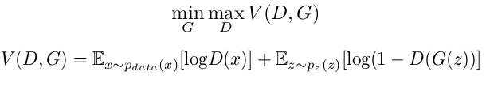
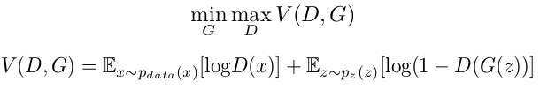
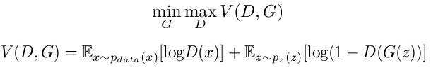

1
Generative Adversarial Network (GAN)
Generative Adversarial Networks (GANs) are a powerful class of neural networks that are used for unsupervised learning. It was developed and introduced by Ian J. Goodfellow in 2014. GANs are basically made up of a system of two competing neural network models which compete with each other and are able to analyze, capture and copy the variations within a dataset.
Why were GANs developed in the first place?
It has been noticed most of the mainstream neural nets can be easily fooled into misclassifying things by adding only a small amount of noise into the original data. Surprisingly, the model after adding noise has higher confidence in the wrong prediction than when it predicted correctly. The reason for such adversary is that most machine learning models learn from a limited amount of data, which is a huge drawback, as it is prone to overfitting. Also, the mapping between the input and the output is almost linear. Although, it may seem that the boundaries of separation between the various classes are linear, but in reality, they are composed of linearities and even a small change in a point in the feature space might lead to misclassification of data.
 Here, the generative model captures the distribution of data and is trained in such a manner that it tries to maximize the probability of the Discriminator in making a mistake. The Discriminator, on the other hand, is based on a model that estimates the probability that the sample that it got is received from the training data and not from the Generator.
The GANs are formulated as a minimax game, where the Discriminator is trying to minimize its reward V(D, G) and the Generator is trying to minimize the Discriminator’s reward or in other words, maximize its loss. It can be mathematically described by the formula below:

Here, the generative model captures the distribution of data and is trained in such a manner that it tries to maximize the probability of the Discriminator in making a mistake. The Discriminator, on the other hand, is based on a model that estimates the probability that the sample that it got is received from the training data and not from the Generator.
The GANs are formulated as a minimax game, where the Discriminator is trying to minimize its reward V(D, G) and the Generator is trying to minimize the Discriminator’s reward or in other words, maximize its loss. It can be mathematically described by the formula below:

How does GANs work?
Generative Adversarial Networks (GANs) can be broken down into three parts: Generative: To learn a generative model, which describes how data is generated in terms of a probabilistic model. Adversarial: The training of a model is done in an adversarial setting. Networks: Use deep neural networks as the artificial intelligence (AI) algorithms for training purpose. In GANs, there is a generator and a discriminator. The Generator generates fake samples of data(be it an image, audio, etc.) and tries to fool the Discriminator. The Discriminator, on the other hand, tries to distinguish between the real and fake samples. The Generator and the Discriminator are both Neural Networks and they both run in competition with each other in the training phase. The steps are repeated several times and in this, the Generator and Discriminator get better and better in their respective jobs after each repetition. The working can be visualized by the diagram given below:
Here, the generative model captures the distribution of data and is trained in such a manner that it tries to maximize the probability of the Discriminator in making a mistake. The Discriminator, on the other hand, is based on a model that estimates the probability that the sample that it got is received from the training data and not from the Generator.
The GANs are formulated as a minimax game, where the Discriminator is trying to minimize its reward V(D, G) and the Generator is trying to minimize the Discriminator’s reward or in other words, maximize its loss. It can be mathematically described by the formula below:

gansformula where, G = Generator D = Discriminator Pdata(x) = distribution of real data P(z) = distribution of generator x = sample from Pdata(x) z = sample from P(z) D(x) = Discriminator network G(z) = Generator networkSo, basically, training a GAN has two parts:
- Part 1: The Discriminator is trained while the Generator is idle. In this phase, the network is only forward propagated and no back-propagation is done. The Discriminator is trained on real data for n epochs, and see if it can correctly predict them as real. Also, in this phase, the Discriminator is also trained on the fake generated data from the Generator and see if it can correctly predict them as fake.
- Part 2: The Generator is trained while the Discriminator is idle. After the Discriminator is trained by the generated fake data of the Generator, we can get its predictions and use the results for training the Generator and get better from the previous state to try and fool the Discriminator.
- Vanilla GAN: This is the simplest type GAN. Here, the Generator and the Discriminator are simple multi-layer perceptrons. In vanilla GAN, the algorithm is really simple, it tries to optimize the mathematical equation using stochastic gradient descent.
- Conditional GAN (CGAN): CGAN can be described as a deep learning method in which some conditional parameters are put into place. In CGAN, an additional parameter ‘y’ is added to the Generator for generating the corresponding data. Labels are also put into the input to the Discriminator in order for the Discriminator to help distinguish the real data from the fake generated data.
- Deep Convolutional GAN (DCGAN): DCGAN is one of the most popular also the most successful implementation of GAN. It is composed of ConvNets in place of multi-layer perceptrons. The ConvNets are implemented without max pooling, which is in fact replaced by convolutional stride. Also, the layers are not fully connected.
- Laplacian Pyramid GAN (LAPGAN): The Laplacian pyramid is a linear invertible image representation consisting of a set of band-pass images, spaced an octave apart, plus a low-frequency residual. This approach uses multiple numbers of Generator and Discriminator networks and different levels of the Laplacian Pyramid. This approach is mainly used because it produces very high-quality images. The image is down-sampled at first at each layer of the pyramid and then it is again up-scaled at each layer in a backward pass where the image acquires some noise from the Conditional GAN at these layers until it reaches its original size.
- Super Resolution GAN (SRGAN): SRGAN as the name suggests is a way of designing a GAN in which a deep neural network is used along with an adversarial network in order to produce higher resolution images. This type of GAN is particularly useful in optimally up-scaling native low-resolution images to enhance its details minimizing errors while doing so.
filter_none
brightness_4
# importing the necessary libraries and the MNIST dataset
import tensorflow as tf
import numpy as np
import matplotlib.pyplot as plt
from tensorflow.examples.tutorials.mnist import input_data
mnist = input_data.read_data_sets("MNIST_data")
# defining functions for the two networks.
# Both the networks have two hidden layers
# and an output layer which are densely or
# fully connected layers defining the
# Generator network function
def generator(z, reuse = None):
with tf.variable_scope('gen', reuse = reuse):
hidden1 = tf.layers.dense(inputs = z, units = 128,
activation = tf.nn.leaky_relu)
hidden2 = tf.layers.dense(inputs = hidden1,
units = 128, activation = tf.nn.leaky_relu)
output = tf.layers.dense(inputs = hidden2,
units = 784, activation = tf.nn.tanh)
return output
# defining the Discriminator network function
def discriminator(X, reuse = None):
with tf.variable_scope('dis', reuse = reuse):
hidden1 = tf.layers.dense(inputs = X, units = 128,
activation = tf.nn.leaky_relu)
hidden2 = tf.layers.dense(inputs = hidden1,
units = 128, activation = tf.nn.leaky_relu)
logits = tf.layers.dense(hidden2, units = 1)
output = tf.sigmoid(logits)
return output, logits
# creating placeholders for the outputs
tf.reset_default_graph()
real_images = tf.placeholder(tf.float32, shape =[None, 784])
z = tf.placeholder(tf.float32, shape =[None, 100])
G = generator(z)
D_output_real, D_logits_real = discriminator(real_images)
D_output_fake, D_logits_fake = discriminator(G, reuse = True)
# defining the loss function
def loss_func(logits_in, labels_in):
return tf.reduce_mean(tf.nn.sigmoid_cross_entropy_with_logits(
logits = logits_in, labels = labels_in))
# Smoothing for generalization
D_real_loss = loss_func(D_logits_real, tf.ones_like(D_logits_real)*0.9)
D_fake_loss = loss_func(D_logits_fake, tf.zeros_like(D_logits_real))
D_loss = D_real_loss + D_fake_loss
G_loss = loss_func(D_logits_fake, tf.ones_like(D_logits_fake))
# defining the learning rate, batch size,
# number of epochs and using the Adam optimizer
lr = 0.001 # learning rate
# Do this when multiple networks
# interact with each other
# returns all variables created(the two
# variable scopes) and makes trainable true
tvars = tf.trainable_variables()
d_vars =[var for var in tvars if 'dis' in var.name]
g_vars =[var for var in tvars if 'gen' in var.name]
D_trainer = tf.train.AdamOptimizer(lr).minimize(D_loss, var_list = d_vars)
G_trainer = tf.train.AdamOptimizer(lr).minimize(G_loss, var_list = g_vars)
batch_size = 100 # batch size
epochs = 500 # number of epochs. The higher the better the result
init = tf.global_variables_initializer()
# creating a session to train the networks
samples =[] # generator examples
with tf.Session() as sess:
sess.run(init)
for epoch in range(epochs):
num_batches = mnist.train.num_examples//batch_size
for i in range(num_batches):
batch = mnist.train.next_batch(batch_size)
batch_images = batch[0].reshape((batch_size, 784))
batch_images = batch_images * 2-1
batch_z = np.random.uniform(-1, 1, size =(batch_size, 100))
_= sess.run(D_trainer, feed_dict ={real_images:batch_images, z:batch_z})
_= sess.run(G_trainer, feed_dict ={z:batch_z})
print("on epoch{}".format(epoch))
sample_z = np.random.uniform(-1, 1, size =(1, 100))
gen_sample = sess.run(generator(z, reuse = True),
feed_dict ={z:sample_z})
samples.append(gen_sample)
# result after 0th epoch
plt.imshow(samples[0].reshape(28, 28))
# result after 499th epoch
plt.imshow(samples[49].reshape(28, 28))
Output:
on epoch0
on epoch1
...
...
...
on epoch498
on epoch499
Result after 0th epoch:
epoch_zero
Resulr after 499th epoch:
epoch499